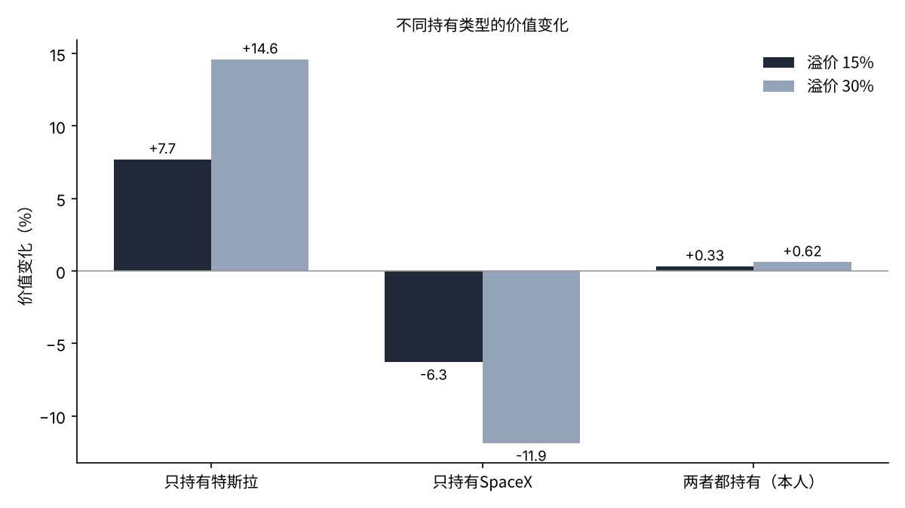
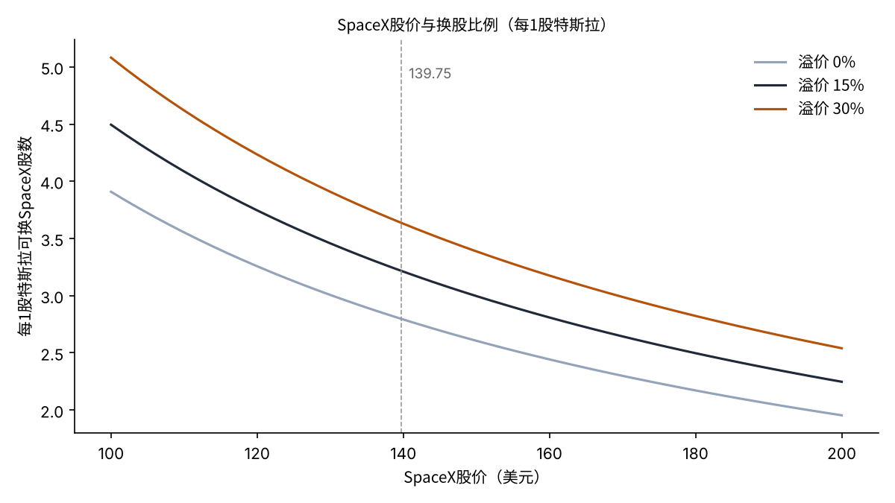

特斯拉与SpaceX若合并，特斯拉1股能换成多少股SpaceX？——用10-Q股数测算各方股东的份额
据报道，特斯拉与SpaceX的合并谈判已有进展，最早可能在12月作为史上最大交易宣布[1]。两家公司的董事会均已设立由独立董事组成的特别委员会，商议换股比例和治理结构[1]。
对股东来说，合并中最重要的数字是换股比例。特斯拉股东的份额，取决于自己的1股能换成多少股SpaceX。
本文的问题是：特斯拉1股能换成多少股SpaceX？这一比例会让特斯拉股东、SpaceX股东以及同时持有两者的股东的价值变动多少？
- 按11月11日收盘价（特斯拉390.84美元、SpaceX139.75美元），无溢价时换股比例约为1股换2.80股，溢价15%约为3.22股，溢价30%约为3.64股。
- 溢价15%时，特斯拉股东的价值约增加7.7%，SpaceX股东约减少6.3%。溢价并不创造新价值，只是在两类股东之间转移价值。
- 对于两家公司持有金额大致相同的股东（SpaceX 1,250股、特斯拉400股），即使溢价15%，价值变化也只有+0.33%。同时持有两者，比例的输赢几乎相互抵消。

问题与背景
本文所说的“换股比例”，是指合并时被吸收公司的每1股，可换得存续公司多少股的比例。这里假设由SpaceX收购特斯拉，并以SpaceX股票支付给特斯拉股东。
“溢价”是指收购方在被收购方当前股价之上多付的部分。上市公司的收购中，为争取被收购方股东的同意，通常会支付溢价[6]。
这个问题之所以现在重要，是因为报道已经具体到比例数字。巴伦周刊估算，若向特斯拉股东支付15%溢价，SpaceX股价为200美元时特斯拉1股约换2.3股，140美元时约换3.2股[2]。
SpaceX股价较6月上市后的高点已大幅回落，股价本身就会左右比例。比例由溢价率和两家公司的股价之比这两个数决定。本文检验哪个数变动时，谁的份额会变动多少。
数据与方法
股数采用两家公司10-Q（季度报告）封面上的已发行股数。截至2026年10月15日，SpaceX为13,581,063,709股[3]，特斯拉同日为3,952,757,946股[4]。
股价采用11月11日收盘价，取自野村证券账户的参考市价：特斯拉390.84美元，SpaceX139.75美元。换算市值，特斯拉约1.54万亿美元，SpaceX约1.90万亿美元。
公式如下：换股比例＝（1＋溢价率）×特斯拉股价÷SpaceX股价。假设合并后公司的价值等于两家市值之和（协同效应为零）。合并后每股价值＝合计市值÷（SpaceX股数＋换股比例×特斯拉股数）。
溢价率设为0%、15%、30%三种，SpaceX股价设为100美元、139.75美元、200美元三种。15%与巴伦周刊的估算相同，30%接近以往上市公司收购中常见的溢价水平[6]。
结果
首先按当前股价计算比例。无溢价时，特斯拉1股约换2.80股SpaceX；溢价15%约为3.22股，溢价30%约为3.64股，与巴伦周刊“140美元约换3.2股”基本一致[2]。
| 溢价率 | 换股比例 | 特斯拉400股可换得的SpaceX股数 | 合并后每股价值 |
|---|---|---|---|
| 0% | 2.797 | 1,119股 | 139.75美元 |
| 15% | 3.216 | 1,286股 | 130.94美元 |
| 30% | 3.636 | 1,454股 | 123.17美元 |
支付溢价后，特斯拉股东换得的股数增加。但合并后公司的价值不变，每股价值会相应被摊薄。溢价15%时，合并后每股价值由139.75美元降至130.94美元。

按股东类型列出价值变化，结构就很清楚。溢价15%时，只持有特斯拉的股东约获益7.7%，只持有SpaceX的股东约损失6.3%。溢价30%时，分别约为获益14.6%和损失11.9%。
两家市值相加，合并后公司价值约为3.44万亿美元。有无溢价，这个合计都不变。变化的只是这笔合计在两类股东之间如何分配。
另一方面，持有SpaceX 1,250股、特斯拉400股的股东，11月11日的价值约为33.1万美元，两家金额几乎相同。该股东的价值变化，溢价15%时仅为+0.33%（约1,096美元），溢价30%时为+0.62%（约2,062美元）。
敏感性分析
接着变动SpaceX股价。若股价跌至100美元，溢价15%时比例约为4.50股，特斯拉400股约换1,798股SpaceX。若股价为200美元，比例约为2.25股，可换约899股。

原特斯拉股东在合并后公司中的持股比例也会变动。按当前股价、溢价15%时约为48.3%；SpaceX股价为100美元时约为56.7%，200美元时约为39.5%。在SpaceX股价越低时确定比例，特斯拉股东的比例就越大。
对于同时持有两者的股东，再进一步分析。设账户中特斯拉所占比重为w，溢价15%时价值变化约为“w×7.7%－（1－w）×6.3%”。当w约为45%时变化为零，溢价30%时也几乎同样约为45%。
| 账户中特斯拉的比重 | 溢价15%时的价值变化 | 溢价30%时的价值变化 |
|---|---|---|
| 20% | 约－3.5% | 约－6.6% |
| 45% | 约0% | 约0% |
| 47.2%（本人账户） | 约＋0.3% | 约＋0.6% |
| 80% | 约＋4.9% | 约＋9.3% |
换句话说，账户中特斯拉比重高于约45%的股东会因溢价获益，低于45%的股东会受损。溢价率越高，差距越大。越接近各半的股东，越不受比例之争的影响。
也就是说，对特斯拉股东而言，比例的好坏既取决于溢价率，也同样取决于确定比例当天的SpaceX股价。宣布之前的股价变动，也会直接计入份额。
讨论
也有相反的看法。合并可能把特斯拉的电动车和机器人，与SpaceX的通信和算力结合起来，产生协同效应。若协同效应很大，合并后公司的价值可能超过两家之和，即使支付溢价，双方股东也可能都获益。本文将协同效应设为零，未包括这种上行可能。
也存在反方向的风险。摩根大通指出，特斯拉的中国业务与SpaceX的国防合同难以切分，是合并的障碍[1]。若监管和合同的协调耗时较长，宣布时间可能推迟到2027年[1]。
也要写明数据的局限。股数为10月15日时点，不包括之后的股权激励和新股发行。股价为某一天的收盘价，与确定比例当天的股价不同。据报道马斯克持有SpaceX约44.7%的股份，视表决权的处理方式，比例以外的条件也会影响股东的份额[5]。
比例之外，还有影响股东份额的条件：马斯克在特斯拉的薪酬承诺在合并后如何延续、合并后董事会由谁组成、各类股份的表决权如何处理。这些不会体现在比例数字上，但对长期持有的股东而言，与比例同样重要。
检验的标准，是特别委员会公布的比例，以及其依据的股价日期。若比例明显高于3.2股，可解读为偏向特斯拉股东；若明显低于3.2股，则偏向SpaceX股东。
结论
换股比例由溢价率和两家股价之比决定。按当前股价，范围约为1股换2.8至3.6股。溢价并不创造新价值，只是在特斯拉股东和SpaceX股东之间转移价值。对于两家持有金额大致相同的股东，这种转移几乎不留下影响。与其押注比例，不如先定好账户中的比重，就不容易被合并的宣布左右。
我的看法
我在日本，持有特斯拉400股、SpaceX 1,250股。作为特斯拉股东，我最关注的是换股比例，希望是让我觉得投资特斯拉是对的比例。不过，比例只能偏向一方，我一直认为两者都持有就不会吃亏。这次测算也用数字确认了这种感觉。所以，宣布当天我不会加仓，也不会卖出。
参考文献
- Yahoo Finance（Bloomberg配信）「SpaceX, Tesla in talks on record merger」2026-11-12 https://finance.yahoo.com/markets/stocks/articles/spacex-tesla-talks-record-merger-202235758.html
- Yahoo Finance（Barron's）「SpaceX stock slump complicates Elon Musk merger」2026-11-12 https://finance.yahoo.com/markets/stocks/articles/spacex-stock-slump-complicates-elon-144818205.html
- Space Exploration Technologies Corp.「Form 10-Q（2026年9月30日終了四半期）」（発行済株式数の出典として FourWeekMBA の引用を確認） https://fourweekmba.com/ai-musks-spacex-holdings-were-worth-862b-at-fridays-close/
- Tesla, Inc.「Form 10-Q（2026年9月30日終了四半期）」2026-10-22（発行済株式数の出典として Kalkine の引用を確認） https://www.kalkine.com/news/announcements/tesla-q3-2026-revenue-flat-rd-surges-to-276b
- Space Exploration Technologies Corp.「Form 424B4（目論見書）」2026-06-12／Elon Musk「Form 4」2026-06-17（保有株数） https://fourweekmba.com/ai-musks-spacex-holdings-were-worth-862b-at-fridays-close/
- Betton, S., Eckbo, B. E., & Thorburn, K. S.「Corporate Takeovers」Handbook of Empirical Corporate Finance, Vol.2, 2008 https://doi.org/10.1016/B978-0-444-53265-7.50006-1
图片：Unsplash。图表由YUKI CAPITAL制作
每天的数字和判断，我都记录在X上。